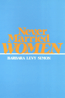

<body bgcolor="#FFFFFF" text="#000000" link="#0000FF" vlink="#CC0000" alink="#CC0000"><center><hr width="350" size="1" align="center" noshade>A spirit of independence pervades these compelling self-portraits as the women describe their decisions<hr width="350" size="1" align="center" noshade><p><a href="https://cdcshoppingcart.uchicago.edu/Cart/ChicagoBook.aspx?ISBN=9780877224976&&PRESS=temple" target="_top">Buy this book!</a> | <a href="https://cdcshoppingcart.uchicago.edu/Cart/Cart.aspx?PRESS=temple" target="_top">View Cart</a> | <a href="https://cdcshoppingcart.uchicago.edu/Cart/Cart.aspx?PRESS=temple" target="_top">Check Out</a></p><p></p></center><!--none//--><h1>Never Married Women</h1>
<h3>Barbara Levy Simon</h3>
<P>cloth 0-87722-497-8 $29.95, Sep 87, <FONT COLOR=#990033>Out of Stock Unavailable</FONT>
<br>paper 0-87722-671-7 $24.95, Jul 89, <FONT COLOR=#990033>Out of Stock Unavailable</FONT>
<br>Electronic Book 1-43990-540-1 $26.95 <FONT COLOR=#990033>Out of Stock Unavailable</FONT>
<BR> 228 pp
</P><BLOCKQUOTE><I>"[Simon] deals seriously and perceptively with lives almost never granted such respect&#151those of the 'spinster,' the 'old maid.' ...There is also a particular ironic energy."</I>
<br>&#151<b><I>The Nation</I></b><I></I></BLOCKQUOTE>
<p>"Nothing is more ridiculous than someone who says, upon learning that I never got married, ‘Oh, you would like my Aunt _____ ! She never got married either. You two would have a lot in common.’ "&#151from an interview, August 1984.
<p>In this timely and provocative study, Barbara Levy Simon interviews fifty American women, born between 1884 and 1918 who were never married, and examines their emphatic refusal to be "yoked by wifing," as one woman expressed it. A spirit of independence pervades these compelling self-portraits as the women describe the day-to-day activities, options and adaptations, as well as the stigma that shaped lives that defied the spinster stereotype. Simon explains: "I have written this book about them because I want others to learn, as I have, about the diversity of their experiences and perspectives. It is only by immersion in this variety that one can begin to comprehend the discrepancy between popular notions of ‘old maids’ and the actualities of single women’s daily lives.... Though women who have never married have often been judged, they have seldom been studied.”
<p>With care and empathy, the author presents women who lived at a time when not being married and being financially independent were considered deviant. From a variety of ethnic, religious, educational, and social groups, and ranging in age from sixty-six to one hundred and one years old, these women discuss the work they have loved or hated and their relations with family and friends. The autobiographical reflections provide insights about the symbolic and material worlds of never-married women and comparisons to the lives of single career women today.
<p>In the 1980s, a significantly higher proportion of American women are foregoing marriage than at any point in the past one hundred years. Simon confronts head-on the image of the passive and unhappy old maid, presenting instead a group of independent and self-actualizing women who, in many cases, chose to remain single.
<BR>&nbsp;<h2>Reviews</h2>
<p><I>"With women choosing to be single in greater numbers than at any other time in this century, a study of single women is most timely.... Although considered deviant by the greater society, these women all manifest a feisty, independent spirit that defies conventional stereotypes of ‘old maids’ or ‘spinsters.‘ ... Maybe you should give your mother a copy of this book the next time she asks."</I>
<br>&#151<b><I>New Directions for Women</I></b>
<p><I>"An important work on a segment of the female population that has remained single for at least six decades in a society that expected its women to marry and bear children [Simon] evaluates the actualities of these women’s lives versus popular images and stereotypes..."</I>
<br>&#151<b><I>Choice</I></b>
<p><I>"By offering concrete examples of how the nuclear family is oppressive to those who stand outside of it, </I>Never Married Women<I> breathes life into critiques of the family articulated by...other feminist theorists. And by focusing on the lives of elderly single women, Simon aptly illustrates the injustice of our over reliance on the family&#151instead of the state&#151to care for the dependent elderly."</I>
<br>&#151<b><I>Contemporary Sociology</I></b>
<p><I>"This book is a paean to women’s resilience, adaptability, and courage to live with the consequences of their own decisions."</I>
<br>&#151<b><I>Readings: A Journal of Reviews and Commentary in Mental Health</I></b>
<BR>&nbsp;<H2>About the Author(s)</H2>
<P><b>Barbara Levy Simon</b> is Associate Professor in the School of Social Work at Columbia University.</P>
<BR><H2>Subject Categories</H2>
<p><A HREF="/tempress/women.html" TARGET="_top">Women's Studies</a>
<BR><A HREF="/tempress/sociology.html" TARGET="_top">Sociology</a>
</p>
<BR><h2 class="inpageheading">In the series</H2>
<P><I><a href="http://www.temple.edu/tempress/women_political.html" onMouseOver="window.status='Click for other books in this series!'; return true;" onMouseOut="window.status=''; return true;" target="_top">Women in the Political Economy</a></i>, edited by Ronnie J. Steinberg.
</p><p>No longer active.<p><i>Women in the Political Economy</i>, edited by Ronnie J. Steinberg, includes books on women and issues of work, family, social movements, politics, feminism, and empowerment. It emphasizes women's roles in society and the social construction of gender and also explores current policy issues like comparable worth, international development, job training, and parental leave.</p>
<p align="center"><a href="https://cdcshoppingcart.uchicago.edu/Cart/ChicagoBook.aspx?ISBN=9780877224976&&PRESS=temple" target="_top">Buy this book!</a> | <a href="https://cdcshoppingcart.uchicago.edu/Cart/Cart.aspx?PRESS=temple" target="_top">View Cart</a> | <a href="https://cdcshoppingcart.uchicago.edu/Cart/Cart.aspx?PRESS=temple" target="_top">Check Out</a></p><p><font face="Arial" size="1"><a href="copyright.html" onMouseOver="window.status='Web Copyright Policy';return true;" onMouseOut="window.status=''" title="Web Copyright Policy">&copy;</a> 2015 <a href="http://www.temple.edu" target="new" onMouseOver="window.status='Link to Temple University home page';return true;" onMouseOut="window.status=''" title="Link to Temple University home page">Temple University</a>. All Rights Reserved. http://www.temple.edu/tempress/titles/435_reg.html</font></p>